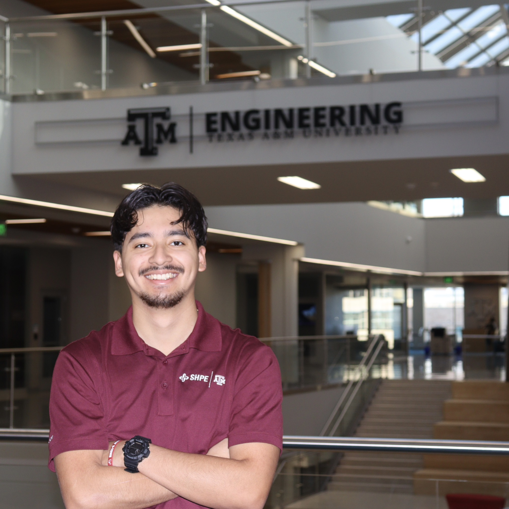
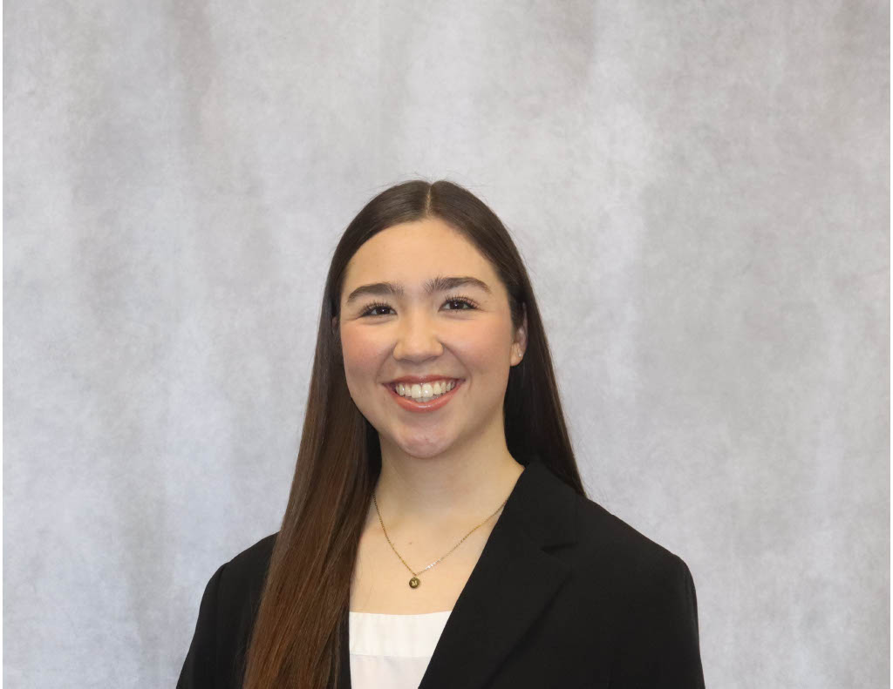
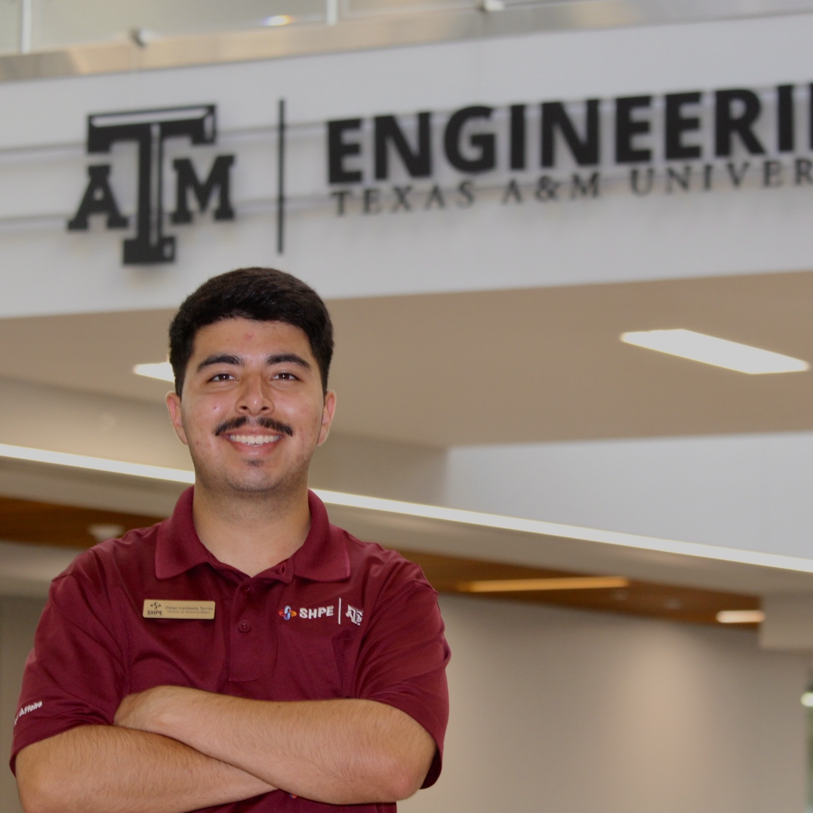

Executive Board

Selvin Diaz '25
Civil Engineering
President
Howdy! My name is Selvin Diaz, and I am a Senior Civil Engineer from Houston, Texas, but most importantly, I am the LOUDEST and the PROUDEST member of the Fightin' Texas Aggie Class of 2025! A-WHOOP! I have the honor and privilege of serving as your President for the 2024-2025 academic year! My purpose here at TAMU SHPE is to help you find your way through college and after graduation. Being a Texas A&M STEM student is not easy, and TAMU SHPE is here to help you learn with the many opportunities it offers. My tasks as the President include overseeing the Executive Board, communicating with SHPE National and SHPE Region 5, and leading the SHPEtinas and LeaderSHPE committees. One of my biggest goals is to redifine the organization by pushing for academic excellence while also focusing on personal growth! I am excited to see you in our organization! If you have any questions or simply want to chat, reach out and we can chat. Thanks and Gig 'em!
Sebastian Luna '25
Industrial Engineering
Vice President
Howdy! My name is Sebastian Luna, I am a senior industrial engineering major from Laredo, Texas, but most importantly, I am THE loudest and THE proudest member of the Fighting Texas Aggie Class of 2025! A! Whoop! This academic year, I have the honor and privilege of serving as the Vice President of TAMU SHPE. I oversee the professional development initiatives of our organization, including workshops, general meetings, and the professional development committee. I also lead all corporate fundraising efforts and manage corporate communications. This year, I am most excited to plan the our trip to the 2024 SHPE National Convention. None of my work would be possible to complete without the help of our E-Board, my Professional Development representative , RJ Calles, and my committee lead, Nancy Ramirez. Thanks and gig 'em!

Gabriella Rivas '25
Industrial Engineering
Secretary
Howdy! My name is Gabriela Rivas and I am a Senior Industrial Engineering Major from Fort Worth, Texas. But most importantly, I am the loudest and the proudest member of the Fightin’ Texas Aggie Class of 2025! A-Whoop! I have the honor and privilege of serving as your Secretary for the 2024-2025 academic year. I am in charge of MemberSHPE, Points, Weekly Newsletters, Photo Frames, the End of the Year Scrapbook, and the New Member Retreats! I can't wait to meet all of you and if you ever have any questions at all please reach out! I'm always here to help y'all out with anything. Thanks and Gig 'Em!

Andy Cano-Avila '26
Mechanical Engineering
Treasurer
Howdy! My name is Andy Cano-Avila, and I am a Junior Mechanical Engineering Major from Katy, Texas, but most importantly, I am the LOUDEST and the PROUDEST member of the Fightin' Texas Aggie Class of 2026! A-A-A WHOOP! I have the honor and privilege of serving as your Treasurer for the 2024-2025 academic year. A few of my tasks include creating and maintaining a budget for the organization, working alongside the Student Organization Financial Center, and setting up diverse fundraisers. My two biggest goals for this year are to offer more leadership experience while simultaneously closing the financial literacy gap, and to develop our biggest fundraiser, SHPErun, into a more inclusive event for its second iteration in TAMU SHPE history! Through this, I hope to rebrand the treasurer committee and prepare its members to handle their present & future career finances. I am very excited to start the year, and I can't wait to see how our organization continues to grow! Thanks, and Gig 'em!

Esteban Ortiz '25
Mechatronics Engineering
Director of External Affairs
Howdy! My name is Esteban Ortiz and I am a senior Mechatronics Engineering major from El Paso, Texas. But most importantly, I am the loudest and the proudest member of the Fightin’ Texas Aggie Class of 2025! A- Whoop! have the honor and privilege of serving as your Director of External Affairs for the 2024-2025 academic year. My role consists of coordinating with our local outreach programs and plan events. At these events, we conduct fun interactive STEM related experiments for the elementary kids, design challenges and college application guidance for the high school program and an after school robotics club as they prepare for competition. We have various more volunteering events throughout the year as well such as our Noche de Ciencias, ACE camp and collaborations with other organizations. I am excited to bring fresh ideas this year to our outreach programs and spark imaginative and creative minds to think like engineers. Hopefully you all can help me achieve this goal throughout the year. Feel free to reach out if you have any questions, want to learn more about my programs or wish to volunteer! Thanks, and Gig 'em!

Marianne Bautista '25
Industrial Distribution
Director of Internal Affairs
Howdy! My name is Marianne Bautista and I am a Senior Industrial Distribution Major from Laredo, Texas. But most importantly, I am the loudest and the proudest member of the Fightin’ Texas Aggie Class of 2025! A WHOOP! I have the honor and privilege of serving as your Director of Internal Affairs for the 2024-2025 academic year. My tasks include hosting social events, organizing local volunteering opportunities, and overlooking all of our athletics including Lonestar Showdown and Intramurals. Internal Affairs is the core of SHPE Familia and hopes to put a smile on all of our member's faces! We strive to ensure that each SHPEster feels welcomed here on campus and has a place to call home in College Station! I look forward to getting to know all of you and seeing how WE can make an impact in SHPE this year! Thanks, and Gig ‘em!

Daniel Martinez '25
Mechanical Engineering
Director of Academic Development
Howdy! My name is Daniel Martinez, I am a Senior Mechanical Engineering Major from Seguin, Texas, but most importantly I am THE LOUDEST and THE PROUDEST member of the fightin' Texas Aggie class of 2025. A-WHOOP! And I have the honor and privilege of serving as your Director of Academic Development for the 2024-2025 academic school year. My main responsibilities include overseeing the MentorSHPE, Professional MentorSHPE, and SHPEmates programs in addition to leading the MentorSHPE and Scholastic Committees. These committees help me make MentorSHPE slides, run MentorSHPE events, setup Study Hours, run Scholastic events, and make Academic Guides! With these responsibilities, I strive to ensure ALL of our members can succeed in their academics while also focusing on their professional and social growth. If you ever have questions or just need someone to talk to, don't hesitate to reach out! Thanks, and Gig 'Em!

Daniel Alvarado '26
Mechatronics Engineering
Director of Public Relations
Howdy! My name is Daniel Alvarado and I am a Junior Mechatronics Major from San Juan, Texas. But most importantly, I am the loudest and proudest member of the Fightn' Texas Aggie class of 2026! A-A-A Whoop! I have the honor and privilege of serving as your Director of Public Relations for the 2024-2025 academic year. My tasks include overseeing all of our social media platforms of TAMU SHPE. I plan and participate in multiple recruiting events as well as design and create merchandise for the organization. I intend to create lots of exciting content to keep our members engaged with all of our events throughout the school year. If you want to be part of any videos or have any questions, don't be afraid to reach out to me! Thanks and Gig 'em!

Diego Landaeta Torres '26
Computer Science
Director of Technical Affairs
Howdy! My name is Diego Landaeta Torres and I am a Junior Computer Science Major from Katy, Texas. But most importantly, I am the loudest and the proudest member of the Fightin’ Texas Aggie Class of 2026! A-A-A Whoop! I have the honor and privilege of serving as your Director of Technical Affairs for the 2024-2025 academic year. My tasks include updating and maintaining the website, overseeing the TAMU SHPE Mobile App and Web Development teams, managing the Arduino and SolidWorks projects, and creating and leading technical workshops. One of my biggest goals is to help SHPEsters develop technical skills to be successful in their future endeavors! I am excited to meet all of our new members and if you ever have any questions, or just want to chat, feel free to reach out! Thanks, and Gig ‘em!